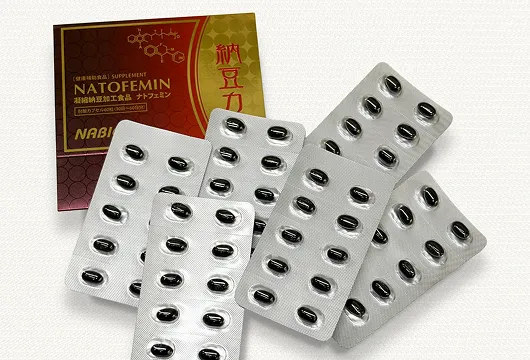
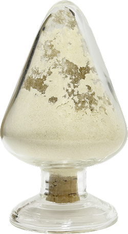

我想支持你的
健康。
致力于开发和销售利用纳豆天然能量的产品。
肠道工厂
人体内部有一套支撑自身运转的机制，而我们正在研究的就是这套机制是如何运作的。

基于我们自身标准的
制造体系
Nabio的
产品为世界各地人们的健康做出了贡献。
我公司一直致力于生产源自纳豆的保健食品原料。
每克我们的产品含有超过100亿个纳豆益生菌。
这与市售一包纳豆中所含的纳豆益生菌数量相当。我们还采用超低温加工技术，使纳豆益生菌更容易在肠道内繁殖。
这款独特的产品作为膳食补充剂原料出口，甚至远销纳豆并非常见食品的海外国家。




市售纳豆含有纳豆菌。我们每克纳豆粉产品含有超过100亿个纳豆菌，相当于一包纳豆中的纳豆菌数量。

我们的纳豆粉产品含有孢子形式的纳豆菌。孢子形式的纳豆菌耐热耐酸，不会死亡。口服后，孢子形式的纳豆菌会在肠道环境中萌发并激活。

在人体肠道这种具备上述所有条件的环境中，纳豆菌能够从孢子状态复苏为活性状态（营养细胞），并首次发挥功能。一旦被激活，纳豆菌就会持续产生酶和维生素。
Products 产品介绍
Nabio产品含有均衡配比的纳豆激酶,脂肪酸合成酶（FAS）,维生素K2,
多胺和纳豆菌。
NATOFEMIN
纳豆激酶是纳豆细菌产生的一种酶。
纳豆激酶是纳豆菌生长过程中产生的。
除了纳豆激酶，纳豆菌还会产生维生素K2和B族维生素等有益健康的成分。
Natofemin PA是一种通过浓缩纳豆菌产生的成分制成的产品。

妙果酵素 纳豆能量
本软胶囊产品由我们的纳豆粉制成。
本产品为肠溶胶囊，符合最新版日本药典标准。
本产品中所含的纳豆菌会在肠道内产生维生素K，因此服用华法林期间不可服用。
如何服用我们的产品
-
每日餐后服用约两片。
食物中的碳水化合物是纳豆菌繁殖的养分。 -
吃完酸味食物后服用也没关系。
纳豆激酶在接触胃酸等酸性液体后会消失。
纳豆中的益生菌即使在强酸环境下也能存活，并在小肠内持续繁殖。 -
每天定时食用。
纳豆益生菌在肠道内生长，并持续24小时以上产生纳豆激酶、维生素K等有益成分，但数量会逐渐减少。我们建议每天补充纳豆益生菌。

Company 公司概况
多年来对纳豆菌的
研究成果已经商业化。
纳豆被广泛认为是一种健康食品。
我们的产品融合了纳豆相关的科学研究成果。
纳豆菌在生长过程中会产生多种酶和维生素。
我们的产品含有纳豆产生的酶和维生素，
但我们的理念是让纳豆菌在肠道内产生这些酶和维生素。

Nabio product features Nabio产品功能
-
Nabio产品中所含的纳豆菌是休眠纳豆菌（也称为产孢细菌）。休眠纳豆菌无法被100°C的高温或pH值为1的强酸性环境杀死。
-
Nabio 的产品每克含有数百亿个纳豆细菌，比世界人口还多。
-
它与食品纳豆相同，都是用纳豆菌发酵大豆制成的，但它的生产采用了一种特殊的技术，最大限度地提高了纳豆菌的数量。